Welcome to Yacht On Cloud user guide.
Login Screen
To perform the log-in, it is mandatory to enter the following fields in the forms:
Tenant: Identification name of the specific enabled tenant.Email: Your e-mail address, which represents the user's unique key.Password: Your password.
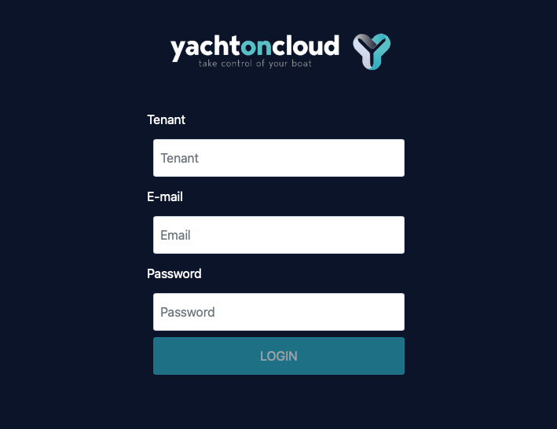
After filling in the fields, you can click on the Log In button.
In case of incorrect credentials, the user will be informed with an error message.
If the credentials are correct, the user will proceed to the next screen.
Vessel Selection Page
On this screen the customer user will be able to view their vessels registered within the system, and navigate to the Tracking Page via the button located at the top.
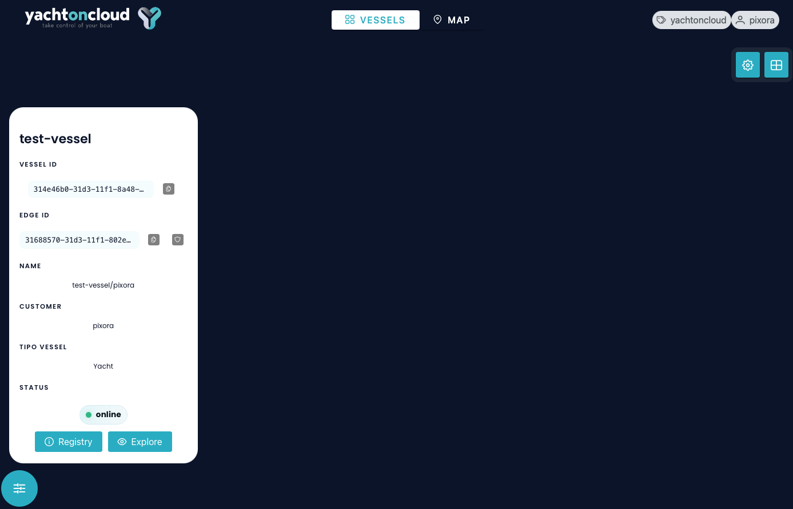
The green or red dot on the vessel cards will indicate an online (reachable) or offline (unreachable) vessel, respectively.
By clicking the Registry button, the card containing the vessel's main information will appear. It is also possible to preview and download a file containing the information for the related sensors.
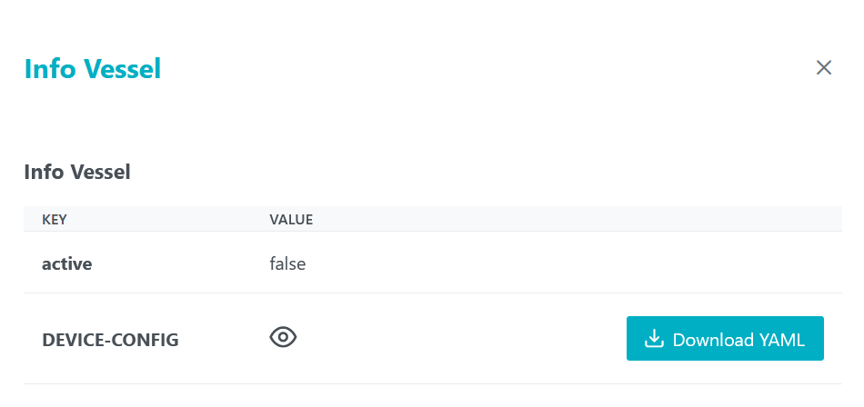
The Explore button, on the other hand, redirects to the Vessel Dashboard page.
Vessel Dashboard
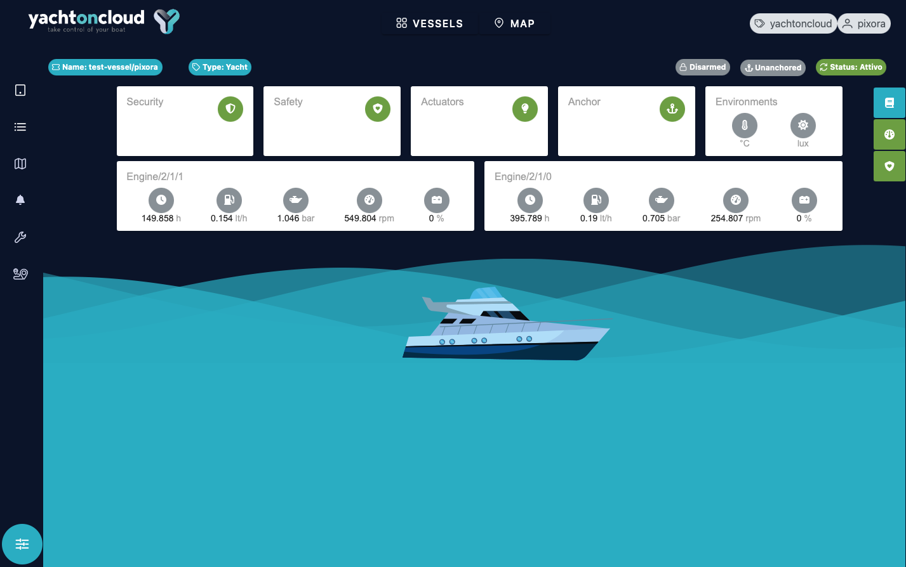
1. Boat Info
The dashboard looks like this.
At the top, we will find information regarding the vessel:
- The name and type of the vessel:
Yacht,Catamaran,Dinghy, orSailboat. - The vessel's status: Whether it is reachable or not:
ActiveorNot Active. - Whether it is armed or not:
ArmedorDisarmed. - Whether it is anchored or not:
AnchoredorUnanchored.
The status of both mooring operations can be changed by clicking the corresponding button.
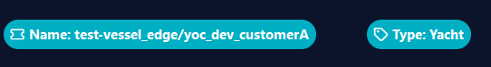
The central image will change based on the type of vessel owned.
If there is no alarming event regarding the vessel, or the boat is disarmed before the alarm was triggered, the background will appear blue and the related icons green.
If there is an alarming event regarding the vessel while it is armed, the background will be red, as will the related icons.
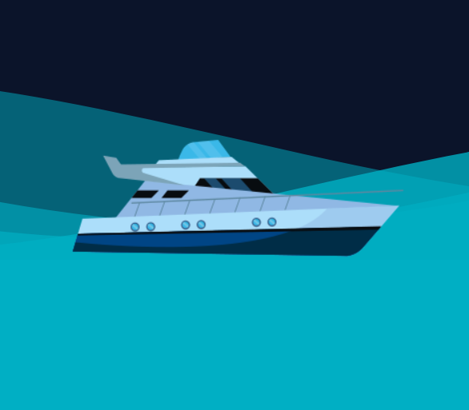
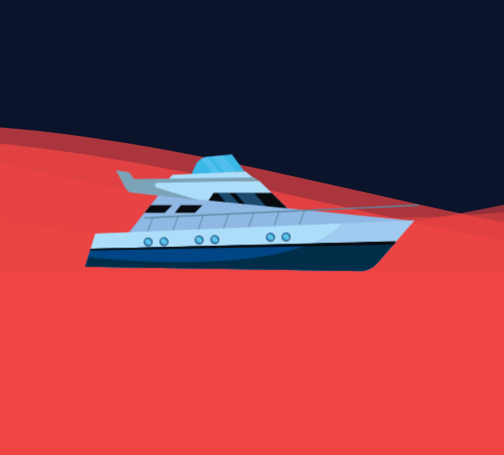
On the right side there is a side menu with 3 buttons that allow us to:
- Show the card related to the engine status by clicking the
Enginesbutton. - Show the card related to the environmental sensor values and alarm status by clicking the
Alarmsbutton.
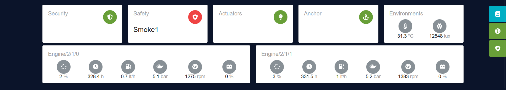
- Show the card related to the vessel's info by clicking the
Registrybutton.
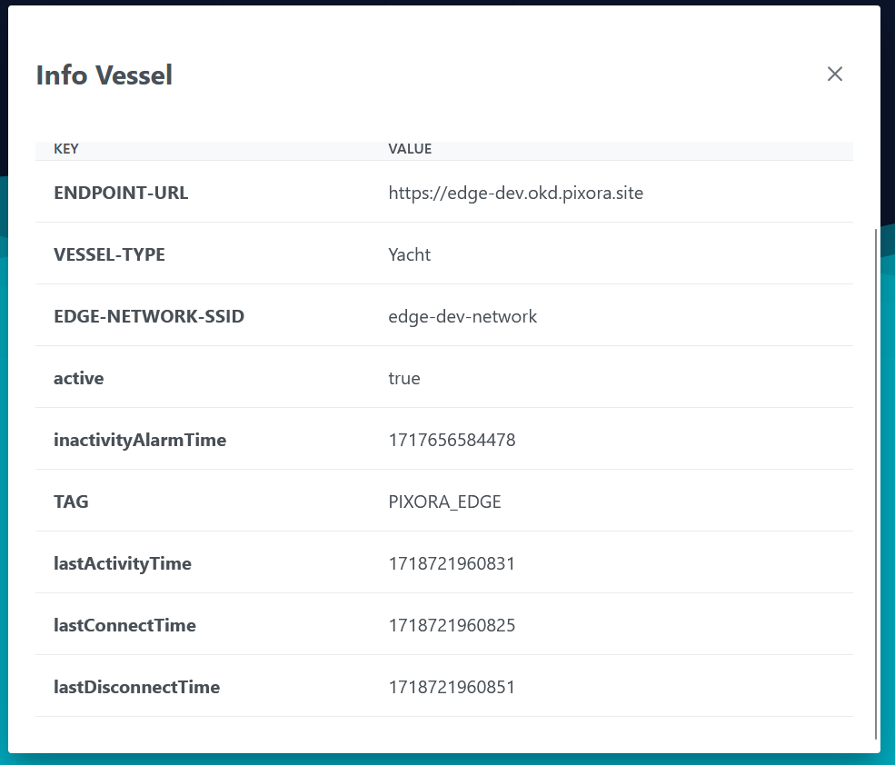
2. Quick Menu
On the left side of the screen, a quick menu is available instead.
In this menu it is possible to view information related to the main dashboard, devices, map, and alarms: Home, Devices, Map, Alarm, Maintenance, Routes.
Each button in the menu will redirect the user to a specific section, which we will cover below. (Dashboard Devices), (Tracking Page), (Dashboard Alarms), (Maintenance), (Routes).
Dashboard Devices
To view the devices available for our vessel, it is necessary to use the Quick Menu to look into the macro-category of devices we are interested in, by clicking the "Devices" button (depicted by a dedicated icon), which will display a screen with all the devices.
By clicking the icon to view all devices, we will see this screen.
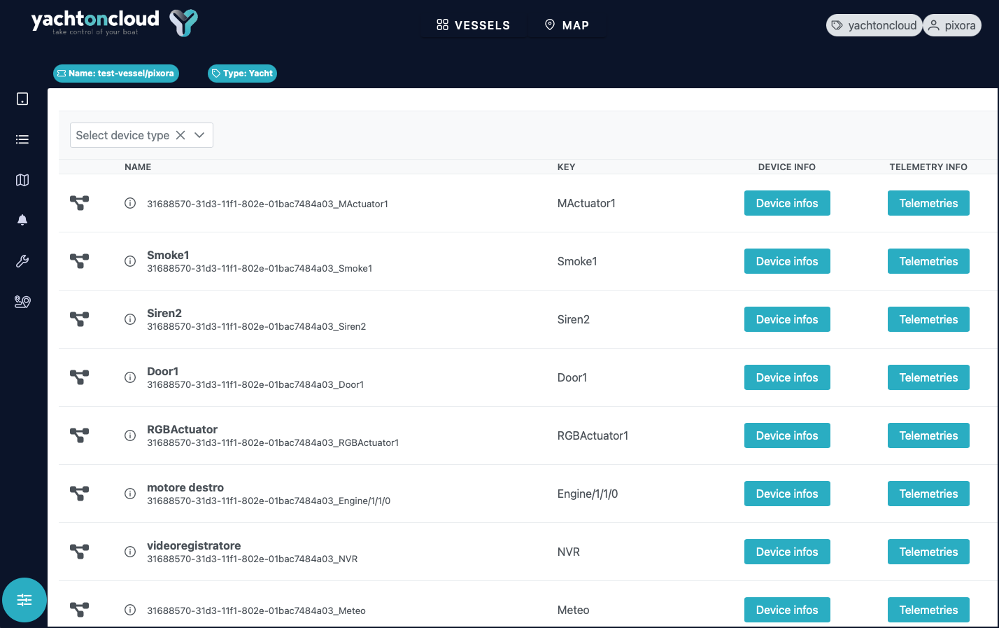
Each row found on this screen corresponds to a device; each device has its own page with the related details.
Next to each device there is also a button that grants access to the Telemetries section, to view all the telemetries for a more thorough search. (See Telemetries Card).
Finally, it is possible to filter the list of devices present by device type.
These functionalities are the same for all devices.
1. Device Infos Card
By clicking the Device infos button, the info device card will appear, used to consult the information of a specific device.
It consists of a key-value pair that provides more precise details about the device's characteristics, such as the temperature which, in the device shown below, is expressed in degrees Celsius.
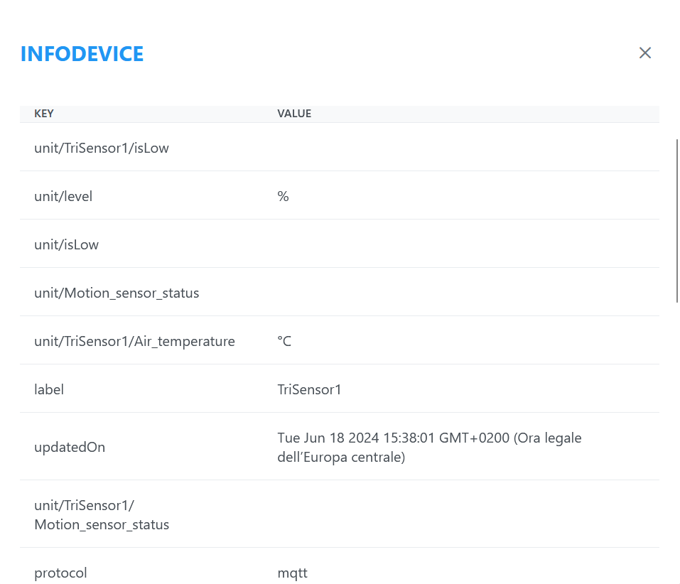
2. Telemetries Card
By clicking the Telemetries button, the Telemetry card will appear, used to monitor device data.
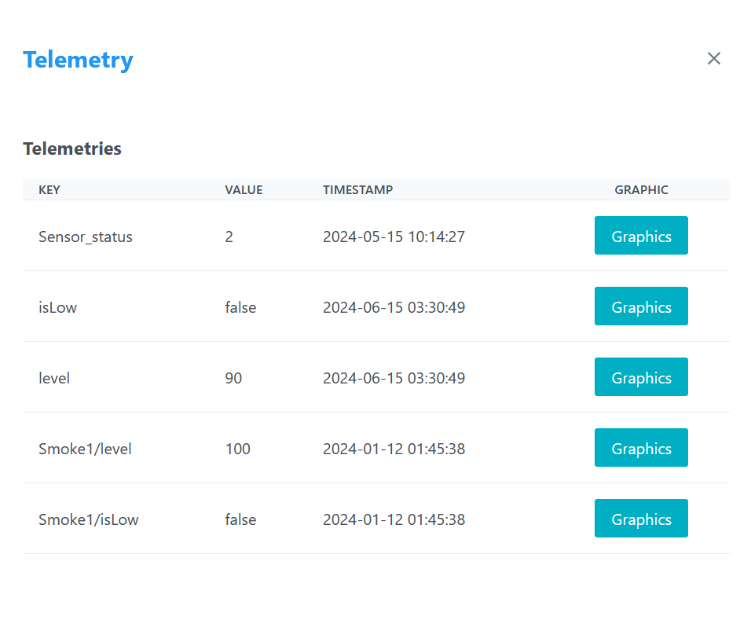
- Key = Represents the data.
- Value = Represents the value of the data.
- Timestamp = Represents the timestamp confirming the occurrence of the last event.
- Graphic = Represents a chart of the latest telemetries for a given data point.
The Graphics button will display a card that visually represents the latest telemetries over a time span.
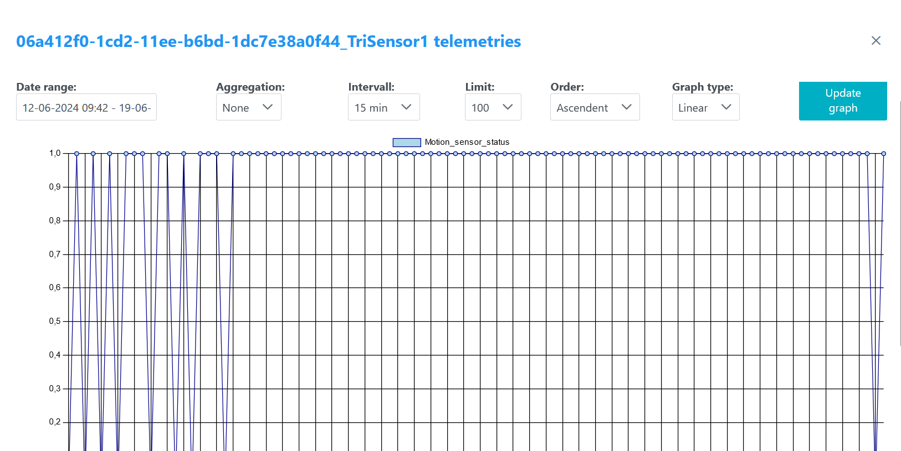
In addition to the default chart view, it is possible to set filters for a customized chart.
Dashboard Alarms
From the Quick Menu, it is possible to view the alarms screen by clicking the appropriate icon (depicted by a bell).
From the dashboard, we can see which device triggered an alarm, indicating the date and time, the alarm type, severity, and its status.
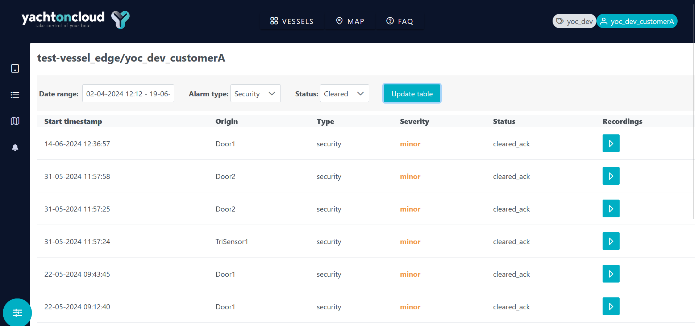
A feature is available that allows applying filters to obtain a customized list of alarms by setting a date range, type, and alarm status.
By clicking the appropriate button, it is possible to view the camera recordings captured during the alarms.
1. Recordings
Upon receiving an alarm, the cameras will start recording. The system allows viewing the recorded videos.
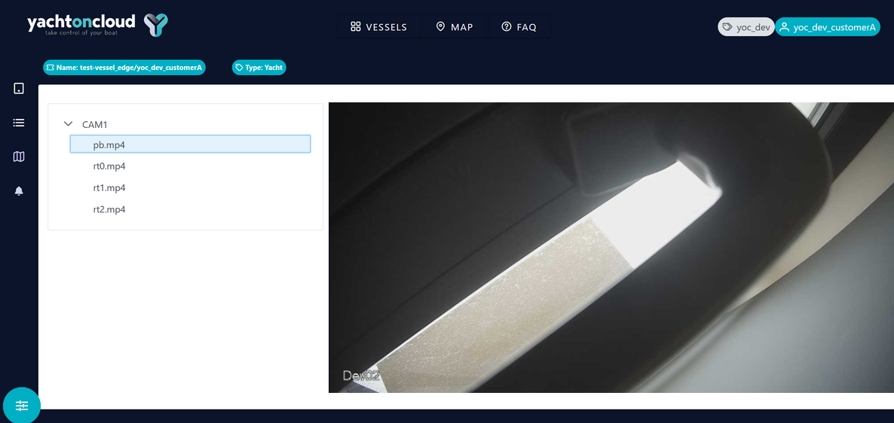
Along the left side of the screen, it is possible to view the list of available cameras, within which the video recorded during the alarm can be consulted, split into several fragments.
Tracking Page
Within the Quick Menu, it is possible to activate real-time tracking of the vessel on a map by clicking the appropriate icon (depicted by a Map).
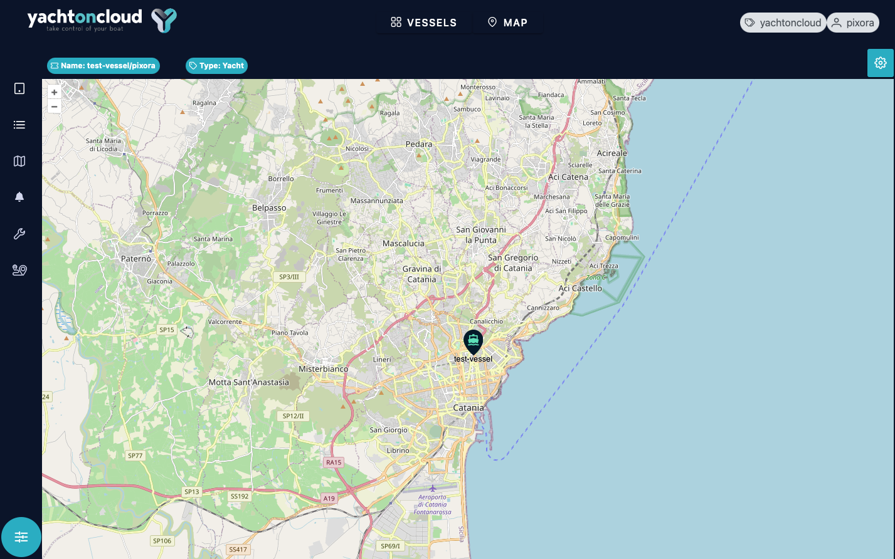
By clicking the settings icon, it is possible to view online vessels, offline vessels, or both.
Maintenance
From the Quick Menu, it is possible to access the Maintenance screen by clicking the appropriate icon (depicted by a wrench), which lists all the maintenance events scheduled for the vessel.
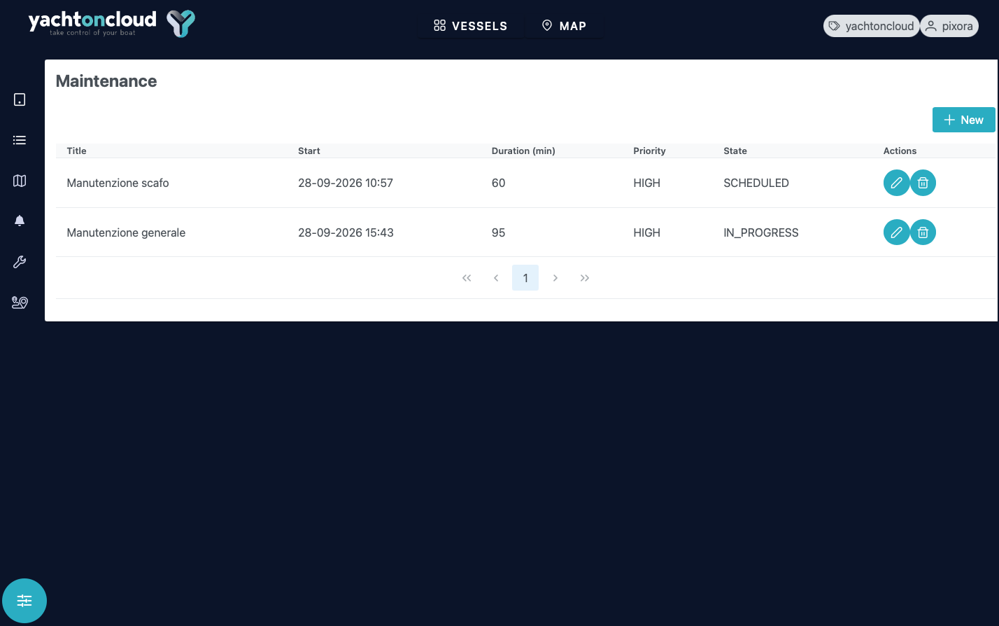
For each maintenance event in the list, the following information is shown: Title (maintenance name), Start (start date and time), Duration (min) (expected duration in minutes), Priority, and State (status: SCHEDULED, IN_PROGRESS, COMPLETED, etc.).
In the Actions column, two buttons are available for each row: the pencil icon to edit the maintenance event and the trash icon to delete it. At the bottom, a pagination system is available to scroll through the list when there are many maintenance events.
1. Creating a Maintenance Event
By clicking the + New button in the top right corner, the New event modal window opens, allowing a new maintenance event to be created.
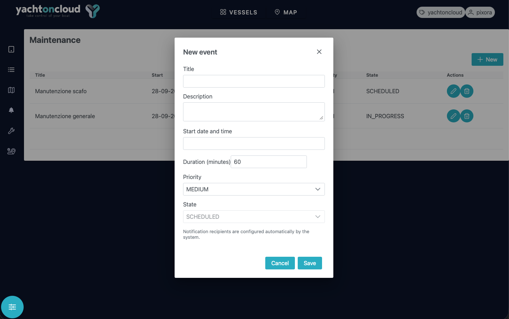
In the window, the following fields can be filled in:
Title: Name identifying the maintenance event.Description: Free text description of the maintenance to be carried out.Start date and time: Scheduled start date and time.Duration (minutes): Expected duration, expressed in minutes.Priority: Priority of the maintenance event (e.g. Low, Medium, High).State: Status of the maintenance event, set by default toSCHEDULEDwhen created.
The recipients of notifications related to the maintenance event are configured automatically by the system, as indicated in the dedicated note shown in the window.
Once filled in, you can click Save to confirm the creation, or Cancel to cancel the operation.
2. Editing a Maintenance Event
By clicking the pencil icon corresponding to a maintenance event already present in the list, the Edit event modal window opens, allowing you to view and edit all the fields entered during creation, including the maintenance event's State.
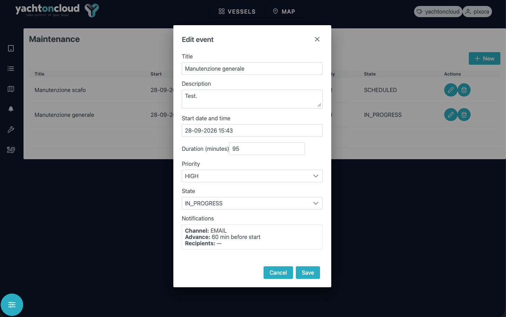
This window also includes a Notifications section, which summarizes the channel used to send the reminder (Channel, e.g. EMAIL), how far in advance the notification will be sent relative to the start time (Advance, e.g. 60 minutes before), and any configured recipients (Recipients).
On this screen as well, changes can be confirmed via the Save button, or discarded via Cancel.
Routes
From the Quick Menu, it is possible to access the Routes screen by clicking the appropriate icon, which lists all the routes traveled by the vessel.
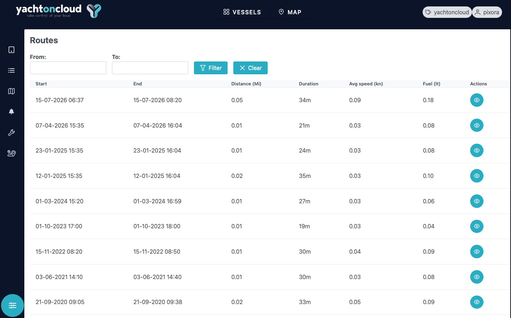
At the top, the From and To filters are available, allowing a time range to be set to narrow down the list of routes by clicking the Filter button; the Clear button removes the applied filters.
For each route in the list, the following information is shown: Start (departure date and time), End (arrival date and time), Distance (Mi) (distance traveled, expressed in miles), Duration (trip duration), Avg speed (kn) (average speed, expressed in knots), and Fuel (lt) (fuel consumption, expressed in liters).
In the Actions column, the eye icon is available, which allows viewing the details of the selected route.
Logout
By clicking the button in the bottom left corner, present on all screens of the app, the user can log out and will be taken back to the Login screen, where they can re-enter their access credentials.